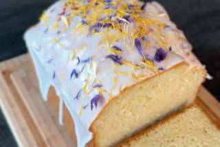

Cake moelleux amande citron mascarpone
Ingrédients
- 250 g de mascarpone
- 125 g de poudre d'amande (peut être remplacé par de la chapelure)
- 1 citron bio (zeste + jus)
- 4 oeufs
- 150 g de farine
- 100 g de sucre blond
- 1 sachet de levure chimique
- 1 pincée de fleur de sel
- facultatif si vous faites le glaçage : 100 g de sucre glace + jus/zeste citron
Temps de préparation
Cuisson : environ 40 min à 180°C
Étapes
- Fouetter le sucre avec les oeufs entiers pour obtenir un mélange bien mousseux qui participera à la texture du cake.
- Ajouter progressivement les autres ingrédients : le mascarpone, le zeste du citron. Mettre tout le zeste du citron pour que ce soit vraiment bien parfumé. On gardera le jus pour le glaçage. Mélanger l'ensemble.
- Une fois que vous obtenez une texture bien lisse et homogène, ajoutez les ingrédients secs : la levure chimique, la farine, de la poudre d'amande. Mélanger le tout pour avoir une belle pâte à gâteau.
- Mettre du papier cuisson un peu graissé dans le moule à cake puis mettre la pâte à gâteau dans le moule.
- Mettre le cake à cuire dans un four préchauffé à 180°C pendant 40 min.
- Démouler le cake une fois qu'il est froid.
- On va faire un glaçage tout simple : jus de citron et sucre glace. Ajouter le jus de citron progressivement au sucre glace pour obtenir la belle texture que vous voulez, plus ou moins liquide pour pouvoir l'étaler ou la faire couler sur le cake.
Astuce déco : ajoutez quelques pétales de fleurs séchées ou des graines de pavot pour un effet visuel et une petite touche originale.